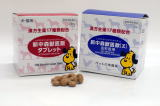
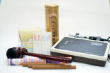

自然療法Complementary therapy
コンセプト

動物のもつ自然治癒力を目覚めさせ心身のバランスを整え、免疫力の向上を目的として自然療法を取り入れた治療を行っています。
当院で取り入れている自然療法は、すべて世界および日本の各大学や医療機関で安全性と有効性について質の高いエビデンスが得られている療法です。
ホモトキシコロジー療法（ドイツの自然療法）
ドイツのレッケベーク博士が生み出した医学理論です。
ホモトキシコロジー療法では、病気を引き起こす毒素のことをホモトキシンといい、病気は ホモトキシンの侵入によっておこるものであり、身体に現れる症状はホモトキシンを排除するための自己防衛反応であると考えます。
毒素は、体内で産生するものもあれば、体外から侵入するもの さらに精神的ダメージも含まれます。
身体が健康なうちは その毒素は血液やリンパを通して排泄器官（肝臓・腎臓・腸管など）によって体外に押し出されますが、この排泄機能が 環境からくるストレスや身体の老化などに伴って衰えてくると、毒素が身体の組織にとどまって蓄積されます。それがさらに慢性化すると私たちの生活活動の中心である細胞を侵し、アレルギーや腎臓病・肝臓病・がんなど様々な慢性病が発症します。
ホモトキシコロジー製剤には、単に症状を改善するだけでなく、細胞に潜んでいる毒素を排泄し、個々の臓器の機能を改善し、免疫系を強化する働きがあります。
製剤は現代医学でも使いやすいように錠剤・注射液・シロップ・軟膏など多くの種類が用意されています。
ドイツをはじめ世界各国での臨床研究でその有効性が科学的に実証されています。
副作用もほとんどなく、従来の一般的な薬剤との併用も可能で、当院でも多数の症例があります。
この療法での治療をするにあたり、定期的なセミナー参加などにより常に最新の知識を持って治療するよう心がけています。
◆定期的なデトックスのおすすめ◆
・・・毒素を排出し、自然治癒力・免疫力アップ
大切な愛犬・愛猫の病気予防・健康維持のために、ホモトキシコロジー製剤を使った病気予防のプログラムもご用意しています。それぞれの身体の健康状態・ご予算に応じてご提案させていただいております
漢方薬
動物が本来持つ自然治癒力を高め、病気を全体的かつ根本的に治療するため 他の治療に加えて、個々の体質や症状に合わせた漢方薬を処方しています。特に椎間板ヘルニアや胃腸病などの慢性病に効果があります。
鍼灸・レーザー療法
東洋医学では、心を含めた身体のバランスが崩れたときに「病」が発症すると考えます。経穴（ツボ）を鍼や灸、レーザーで刺激することで滞っていた気の流れが改善され、身体のエネルギー系のバランスが整い、本来持っている免疫力と自然治癒力が高まるとされています。


また、椎間板ヘルニアや腰痛などの脊髄疾患等による痛みで硬縮した筋肉を緩めて痛みを緩和するなど即効性もあります。
個々の症状に合わせて、鍼・灸・レーザーを選択いたします。
バイオレゾナンス療法
ドイツ振動医学のバイオレゾナンス療法は、周波数を使った新しい療法です。1970年代にパウル・シュミットにより誕生しました。
私たちの体には、東洋では何千年も前から『気』（中国）『プラーナ』（インド）と呼んできた目には見えない『生命エネルギー』『生命力』が流れています。
全身の機関や組織、細胞の一つひとつに生命力を与えているエネルギーの流れです。
シュミットは、生命エネルギーが全身をスムーズに流れている状態が健康で、逆に何らかの原因で流れが滞ると不調や病気になると考えました。
すべてのものは固有の周波数を持つことに着目したシュミットは、動物、植物をはじめ有機・無機の物質が有する振動を0～100までの周波数として数値化しました。そして あらゆる「気の滞り」の固有周波数を突き止め、それと同じ周波数を送ることによって、滞りを見つけたり解消する方法を開発しました。
わかりやすくは、私たちや動物の身体の細胞や臓器もそれぞれ固有の周波数で振動していて、それが放射されています。心身が不調をきたしたり、各臓器が健全に機能しなくなったり、病気に陥ったりすると、その振動が本来の周波数からずれてしまい異常な振動を出すようになります。その振動をキャッチすれば、どこに異常があるかがわかります。
ドイツの振動医学は、目に見ない生命エネルギーを振動というカタチに数値化「見える化」して、振動測定器で簡単に使えるようにしたのです。
バイオレゾナンス療法でできること
①「測定」
・心身の不調や病気の原因となっている障害（本来の周波数からずれた振動）を見つける
②「振動調整」
・そのずれた周波数を元に戻し、生命エネルギーの流れをよくして生命力や自然治癒力を高める
本来の周波数を送り、ずれた周波数を元に戻し、スムーズな流れを取り戻し、本来の自然治癒力や生命力を引き出していくものです。
「不調和に気づき、調和を取り戻す」という考えをもとに、現在の病気だけでなく、未病状態の予防医学として、また過去の治療の害への対処として、または体質改善や心の安定・リラクゼーションなど生命力の改善・健康維持・アンチエイジングにとあらゆるアプローチが可能です。
ドイツでは医療機器として認められ、約6,000箇所の医療機関で採用されており、日本でもこの振動医学を取り入れる医師・歯科医師・獣医師、鍼灸師や医療施設が増えています。
当院で行っているパウルシュミット式バイオレゾナンス療法と、一般の波動療法との決定的な違いは、35年以上にわたる緻密で膨大な周波数の解析データと臨床データに基づきシステム化されていることと、ここで使う機器から発生する波動の波形が自然由来の波形であるため、身体に害がなく安全で有効性が高いという点です。【世界特許】


バイオレゾナンスの測定と振動調整は、ディテクタという布をまいてラクな姿勢でいるだけです。副作用がなく苦痛やリスクがありませんので、安心して受けられます。
引用参考文献：ヴィンフリート・ジモン著
「最新ドイツ波動健康法」
フラワーエッセンス

フラワーエッセンスは、自然に咲いている花のエネルギーを水に転写し活性化したもので花の波動水とも言われます。1930年代にイギリスの医師であるバッチ博士により開発されました。
バッチ博士は、さまざまな不調の原因は マイナス感情と関係があることに気づき、心の調和を取り戻して本来の自分らしく生きることが、身体の健康を取り戻すことにもなると確信し、38種類のフラワーレメディを完成させました
。
否定的な考えやストレス・憂うつ・怒りなど、心のみだれから肉体を開放し、本来備わっている自然治癒力を高める自然療法です。
人と同じように、動物も心と身体の間には 密接なつながりがあります。さらにペットの場合は、飼い主の心の状態からも大きな影響を受ける場合があります。
このレメディは 疾患に応じた他の治療法や薬と併用できます。そして、その治療法の効果が最大限に生かされるよう後押しします。
完全に無害であり、習慣性も副作用もないので安心して使うことができます。
レメディは、口に直接たらしてあげるか、飲み水やフードにふりかけて与えます。
動物の感情に合わせて自由に組み合わせることができます。
◆レスキューレメディ･･世界でもっともよく使われている、人気の高いレメディです。緊急時のために5つのレメディを混合して作られています。おびえていたり、パニックを起こしているときなどすぐに落ちつかせたいときに。車、雷などに恐怖を覚えたりするときなどに。過度の緊張、ショック、ストレスをやわらげます。１家に１本あるとご家族でお使いいただけます。